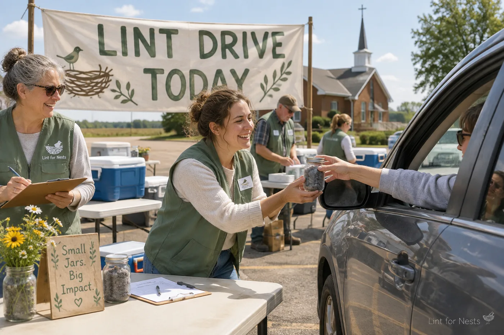
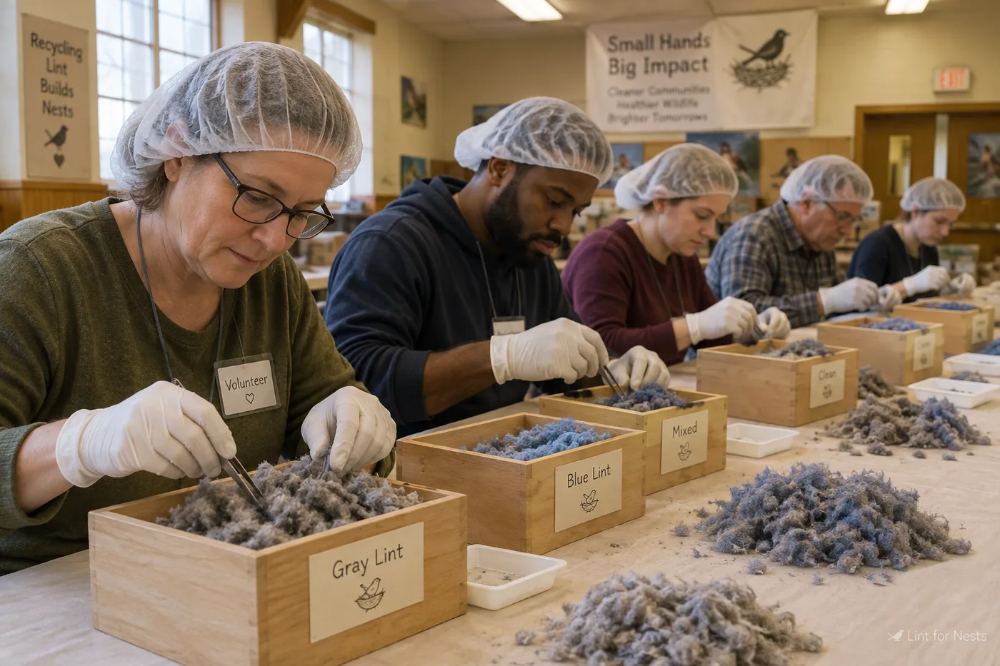

Drive up, drop off, drive home warm inside
Lint Drives
Our drive-up Lint Drives run every sweater season, mostly on Saturdays, mostly in church parking lots. Stay in your car. A volunteer in a sage vest will come to your window with a clipboard and a kind word.

The fall drive at Good Shepherd Lutheran, Waverly. A record morning: 4.2 pounds.
Upcoming drives
| Date | Location | Hours | Notes |
|---|---|---|---|
| Sat, Oct 3 | Good Shepherd Lutheran, Waverly, IA | 8 am to noon | Coffee provided. Decaf only, after the incident. |
| Sat, Oct 10 | St. Norbert's overflow lot, Sheboygan, WI | 9 am to 1 pm | Enter from the alley. The main lot is for the rummage sale. |
| Sat, Oct 17 | First Methodist, Owatonna, MN | 8 am to noon | Jar exchange available. Bring a jar, leave with a cleaner jar. |
| Sat, Oct 24 | Cornbelt Community Church, Ames, IA | 9 am to 1 pm | Our sorting supervisor will be signing certificates. |
| Sat, Nov 7 | Hope Reformed, Pella, IA | 8 am to 11 am | Final drive before the frost. Bring everything you have. |
Acceptance standards
We are grateful for every donation, and we are also a certified fiber-recovery facility with standards. Please review before your first drive:
- Navel lint only. This is our founding rule and it is explained, twice, in the FAQ.
- Any clean jar or paper envelope. No plastic bags. Lint deserves to breathe, and so do our sorters.
- All colors welcome. Blue-gray dominates, and our graders enjoy a surprise.
- No loose deliveries. Do not hand a volunteer an unconstrained tuft through a car window on a windy day. We lost most of the 2019 spring harvest this way.
- Label if known. Donor name, collection period, and dominant sweater are helpful but optional.

The grading line in Oskaloosa. Every tuft, inspected by hand.
Interactive tool
Lint Yield Estimator
Estimate your annual navel yield and see how many warblers you could warm. Figures reviewed by our sorting supervisor and deemed plausible.
4 days a week
1.0 g estimated annual yield
3 warblers warmed per year